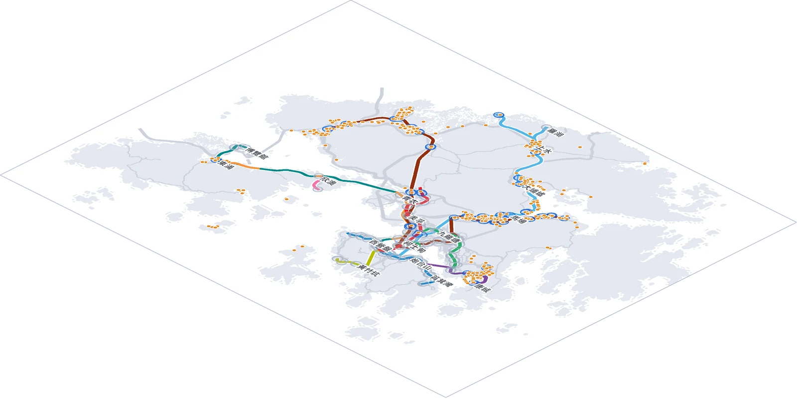
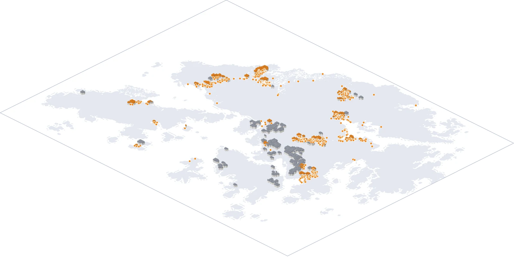

資料來源：運輸署 底圖：© 地政總署 製圖：於夏涵
市區鐵路出入口密集，附近卻幾乎沒有公共單車泊位記錄
同一張香港地圖拆成六層：每層只畫一類內容，看它 500 米內有沒有泊位點
圓點＝運輸署公共單車泊位點（與各層標籤同色）
1
鐵路出入口
31.7%
附近錄有泊位
共 624 個出入口；彩線＝港鐵線路，淺灰線＝主要道路；圓圈＝出入口 500 米範圍（藍＝有泊位，灰＝沒有）；橙點＝泊位點

2
公共屋邨
40.4%
附近錄有泊位
共 245 個屋邨；每個房子＝屋邨的一座樓；橙屋頂＝500 米內有泊位（99 個屋邨），灰＝沒有；橙點＝泊位點

3
房委會商場
44.6%
附近錄有泊位
共 56 處；每棟灰色商場＝一個商場；紫色招牌＝500 米內有泊位（25 個商場），灰色招牌＝沒有；紫點＝泊位點

4
工商業樓宇
17.3%
附近錄有泊位
共 4,625 個地址；每個房子＝一座工商業樓；琥珀屋頂＝500 米內有泊位（802 個地址），灰＝沒有；琥珀點＝泊位點

5
樓齡 50 年以上住宅
17.7%
附近錄有泊位
共 9,205 個地址；每個房子＝一座舊樓；粉紅屋頂＝500 米內有泊位（1,625 個地址），灰＝沒有；粉紅點＝泊位點

6
公共單車泊位
運輸署 515 個點；3D 地形底圖，紅點＝泊位點
資料來源：運輸署單車泊位資料；房委會屋邨及商場資料；屋宇署樓宇資料及樓齡紀錄；OpenStreetMap（道路、鐵路出入口、港鐵線路、地形底圖紋理）；高程：AWS Terrain Tiles；記者整理 製圖：於夏涵
圖註：500 米為直線距離，按資料位置點計算。工商業記錄按地址合併；舊樓指入伙紙日期為 50 年或以上的住宅／綜合用途樓宇；商場只涵蓋房委會商場；出入口只計香港境內帶出口編號者；港鐵線路不含輕鐵。運輸署資料中市區只有 6 個泊位點，結果可能反映資料覆蓋範圍。屋邨及各類樓宇的房子位置為示意。底圖 © OpenStreetMap contributors。